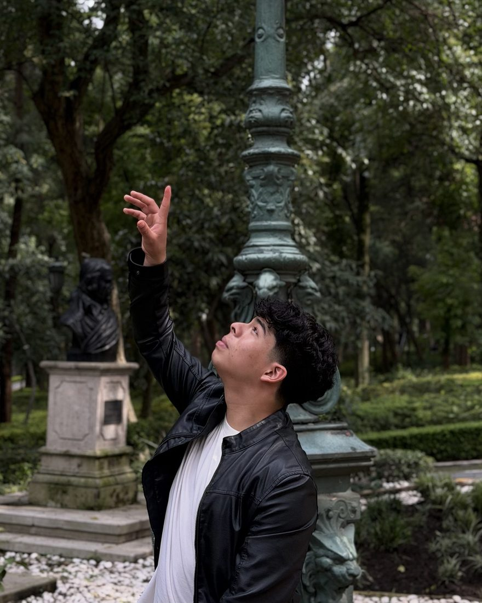

Mis iniciativas son
Propuestas con proyecto de decreto para el Congreso de Oaxaca, pensadas para resolver lo que más le duele a la gente.
Desliza →
Trayectoria política
Joven oaxaqueño y estudiante de Derecho en la UABJO. Estoy con Movimiento Ciudadano porque creo en la participación ciudadana y en que las y los jóvenes tenemos lugar en las decisiones públicas.
Desde mi casa en el Distrito 13 he caminado buena parte del estado. Cada punto naranja es un lugar donde he estado escuchando a la gente.
Un proyecto para mi comunidad: escuchar a los vecinos y trabajar de cerca por San Martín.
Consejo Distrital 13, Oaxaca de Juárez. Contribuyo a que los procesos electorales sean transparentes y confiables.
Movimiento Ciudadano. Coordinación y organización de actividades con jóvenes en el municipio.
Movimiento Ciudadano. Trabajo voluntario en temas de participación ciudadana y juventudes en Oaxaca de Juárez.
La base de mi interés por las instituciones y el servicio público.
Participar también es una forma de cuidar a Oaxaca.— Ángel G. López V.